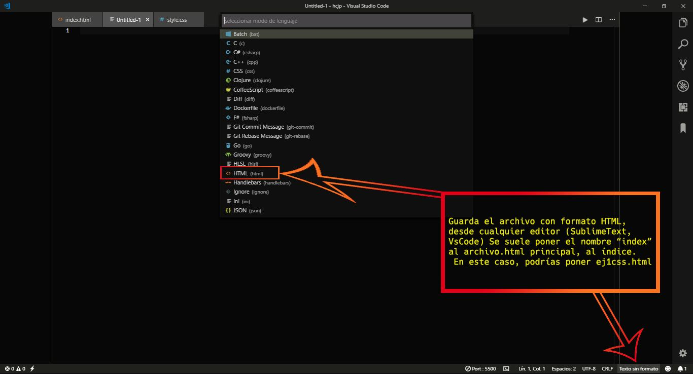
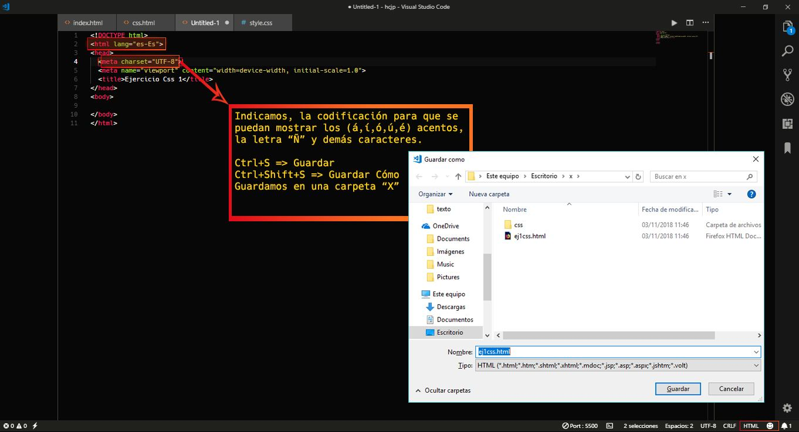
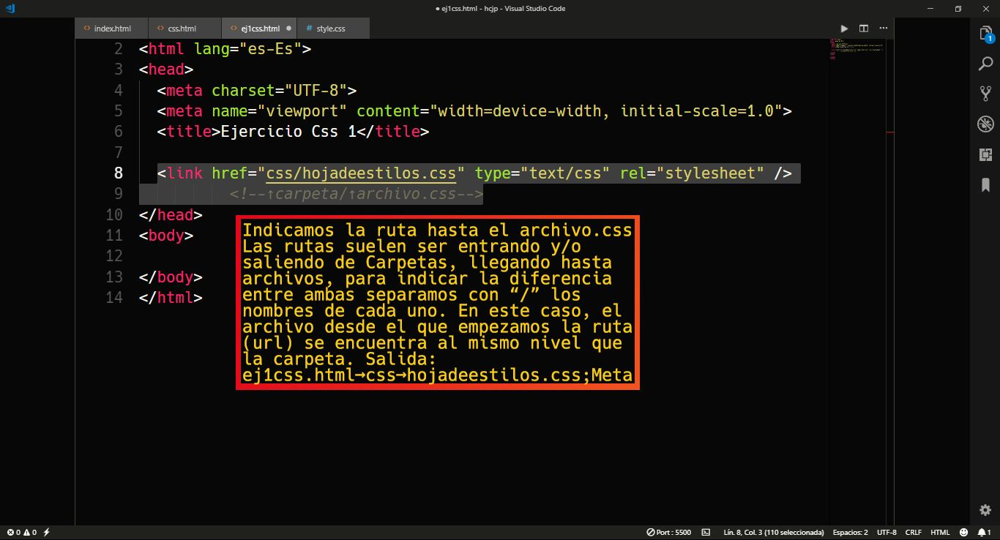
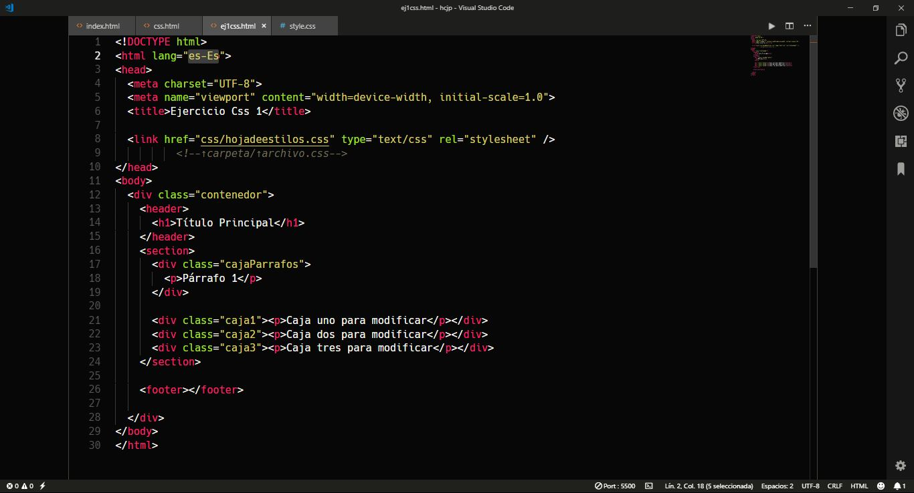
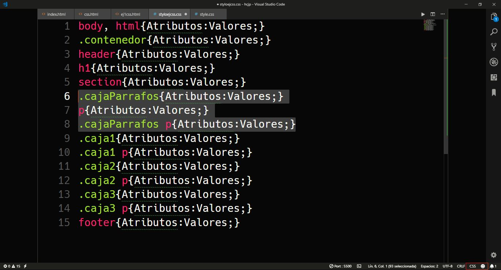
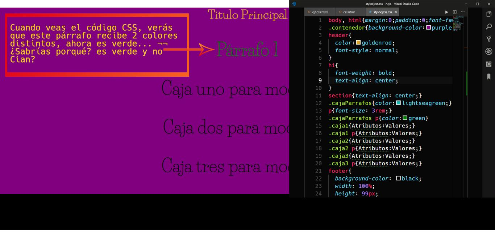
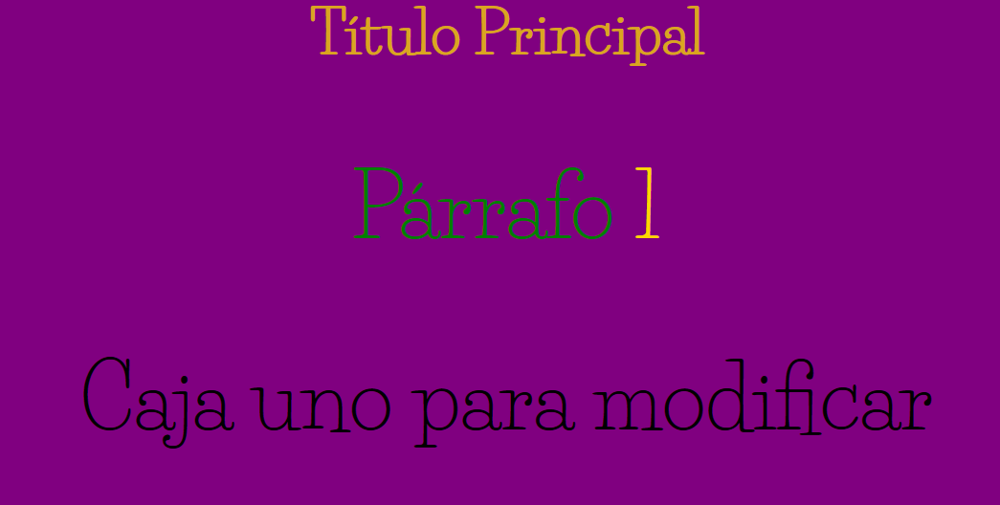

Hoja de Estilos en Cascada
Si cambiamos "hoja" por "archivo" y "cascada" por "orden jerárquico" obtendríamos => Archivo de Estilos en orden jerárquico. Esto puede facilitar la comprensión de:
- La sintaxis de CSS.
- Y su funcionamiento.
Con esto, podríamos empezar por ver un par de ejemplos y comprenderlos.
Ejemplos sencillos de CSS
Ejemplo 1:
Cambiar los valores de atributos: color, fuente, y tamaño a un párrafo "<p>" con etiqueta/elemento y "class":
p {
color: #F33333;
font-family: 'Orbitron', sans-serif;
font-size: 15pt;}
/* Al usar el selector "p" en css, estamos "diciendo" que todas las <p> de HTML, tendrán estos valores, lo cual puede que no nos interese, puede que solo queramos modificar unas pocas líneas de texto, como es el caso. Para ello habrá que darle una clase específica a la <p> que queramos modificar. Le damos la clase al párrafo en HTML así: <p class="ejCss">
y en CSS indicamos con el punto por delante, el nombre que le hemos dado a esta clase, con el punto, css entiende, que lo que venga después será una clase*/
.ejCss {
color: #F33333;
font-family: 'Orbitron', sans-serif;
font-size: 15pt;}
-- Vista previa en el explorador
→↓ Párrafo sin modificar ↓←
Soy un párrafo HTML y seré modificado por un archivo.css de modo externo.
→↓ Mismo párrafo modificado ↓←
Soy el mismo párrafo HTML y he sido modificado por un archivo.css de modo externo.
--
Prueba a cambiar los valores. Dale al "Run Pen" y accede a Codepen.io para poder modifcarlos.
See the Pen Ej. de CSS 1 by jaronJabaton (@jBaton) on CodePen.
También puedes copiar el código, crear y vincular tus archivos y probar en tu entorno de trabajo.
Para ello:
- 1 Crea un archivo HTML

- 2 Indica la codificación

- 3 Llama al archivo CSS

- 4 Crea tus elementos

- 5 Declara las clases en CSS

- 6 Juega un rato

Como habrás visto, a cajaParrafos, le sigue con un espacio, una "p" en nuestro archivo.css:
.cajaParrafos p{} , esto le dice al interprete los valores que deben tener todos los párrafos que estén dentro del div con "class='cajaParrafos'". Pero por qué es verde y no cian? Prueba a escribir sin la etiqueta "p", dentro de cajaParrafos.., cualquier elemento que no sea un párrafo tendrá un color (cian) Resumiendo Para indicar elementos que estén dentro de otros elementos, debemos usar un orden de jerarquía, este orden va de externo a interno (lectura HTML) y de izquierda a derecha separado por espacios (escritura CSS)
<div class="cajaParrafos">
<p>Párrafo <span class="num1">1</span></p> .cajaParrafos p .num1{color:gold}
</div>
No por saber esto te dediques a crear Sandwiches! Recurrir a ello está bien si no encuentras otro modo de acceder a algún elemento, pero seguro que encuentras formas más simples y con vistas al mantenimiento futuro.
